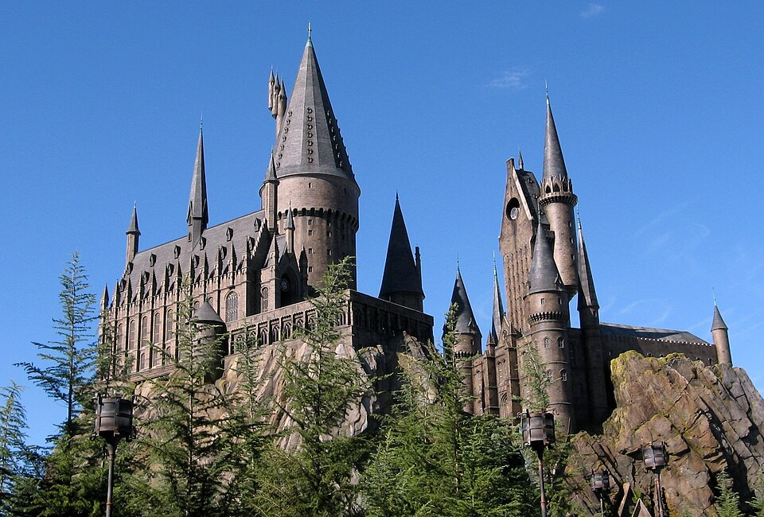
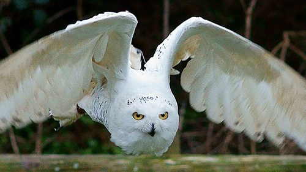

A saga de filmes
Harry Potter é uma das sagas mais famosas de sempre. Nasceu nos livros da escritora britânica J. K. Rowling e foi adaptada ao cinema em oito filmes, estreados entre 2001 e 2011. A história conta a vida de um rapaz órfão que descobre aos 11 anos que é um mago e vai estudar para Hogwarts.
Queres saber mais? Visita a página da Wikipédia sobre os filmes.
Porque é que a saga é especial
- Um mundo mágico cheio de feitiços, criaturas e escolas de magia
- Personagens inesquecíveis como Harry, Hermione, Ron e Dumbledore
- Uma história sobre amizade, coragem e luta contra o mal
Os oito filmes
Esta é a ordem pela qual os filmes devem ser vistos:
- Harry Potter e a Pedra Filosofal (2001)
- Harry Potter e a Câmara dos Segredos (2002)
- Harry Potter e o Prisioneiro de Azkaban (2004)
- Harry Potter e o Cálice de Fogo (2005)
- Harry Potter e a Ordem da Fénix (2007)
- Harry Potter e o Príncipe Misterioso (2009)
- Harry Potter e os Talismãs da Morte – Parte 1 (2010)
- Harry Potter e os Talismãs da Morte – Parte 2 (2011)
As personagens principais
| Personagem | Ator | Quem é |
|---|---|---|
| Harry Potter | Daniel Radcliffe | O herói, conhecido pela cicatriz em forma de raio |
| Hermione Granger | Emma Watson | A melhor aluna do ano, inteligente e corajosa |
| Ron Weasley | Rupert Grint | O melhor amigo de Harry |
| Lord Voldemort | Ralph Fiennes | O mago das trevas, o grande vilão |
Imagens e vídeo
Na imagem, uma coruja-das-neves, a espécie da Hedwig, a coruja de Harry. No vídeo, um comboio a atravessar o Viaduto de Glenfinnan, na Escócia, o local onde aparece o Expresso de Hogwarts.
